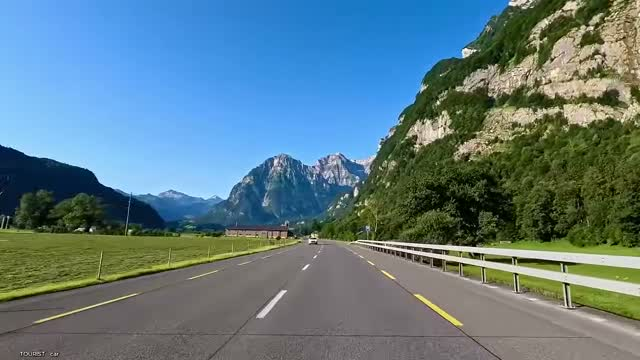
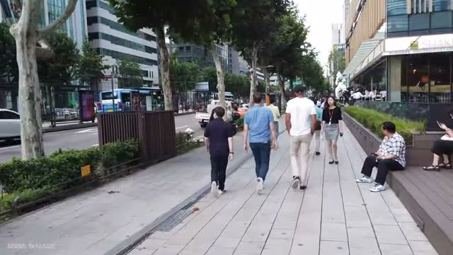
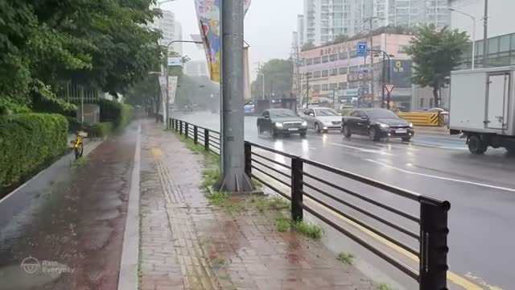
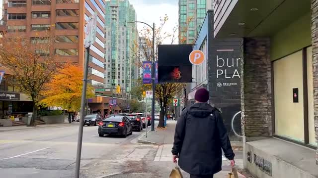
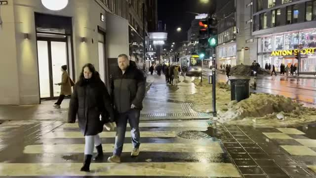
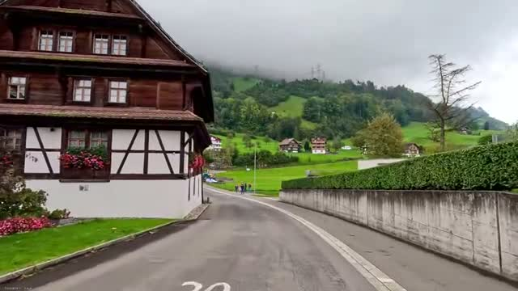
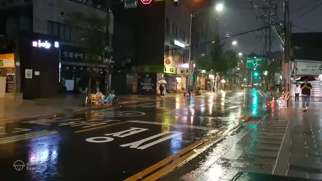
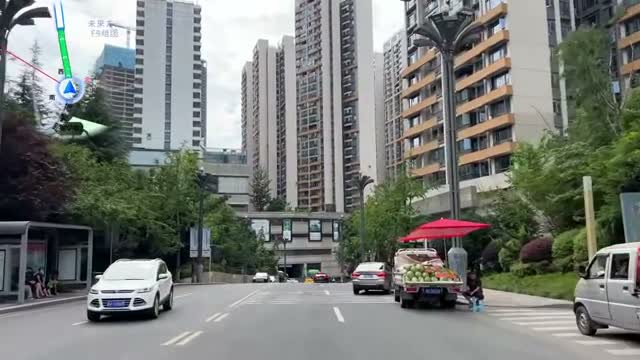
Continuous dynamics need
a shared internal state.
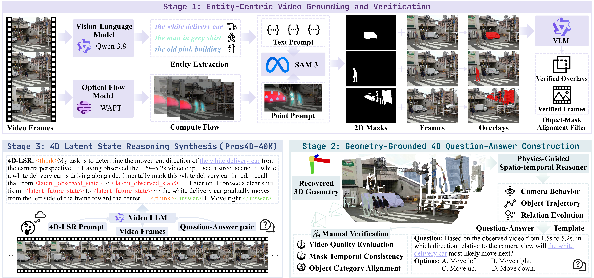
Geometry-grounded supervision
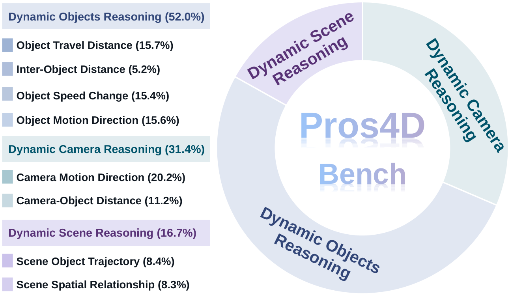
Two capabilities · eight tasks
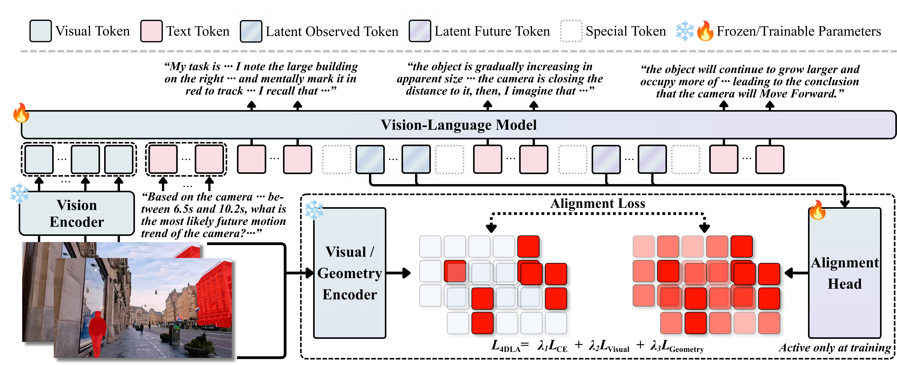
Evolving latent world states
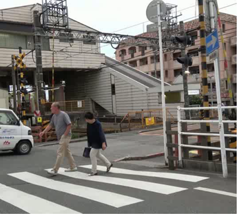
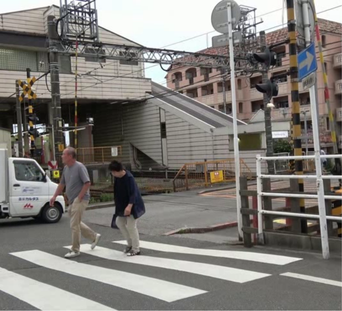
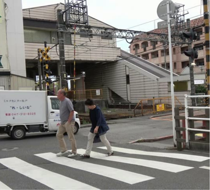
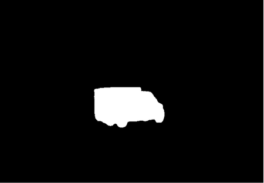
Delivery car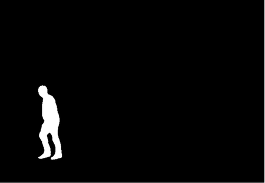
Walking person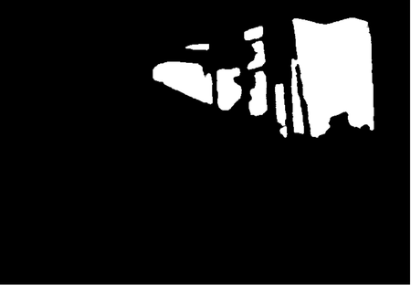
Static building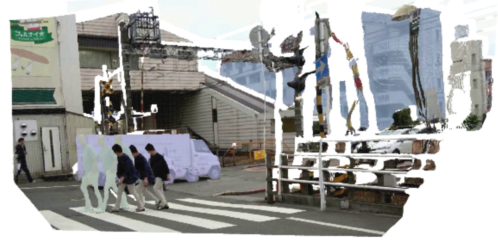
Where will the delivery car move?
Move right.Geometry-grounded answer
Video frames
Recall observed states.
Imagine future states.
Where will the white car move?
B. Move right.
My task is to infer the white delivery car’s direction.
I observe the 1.5–5.2 s clip and track the car.
I recall: [observed state] … [observed state].
I imagine: [future state] … [future state].
The car shifts from the left toward the center.
<answer> B. Move right. </answer>
What changed within the observed clip?
What changes beyond the same observed clip?
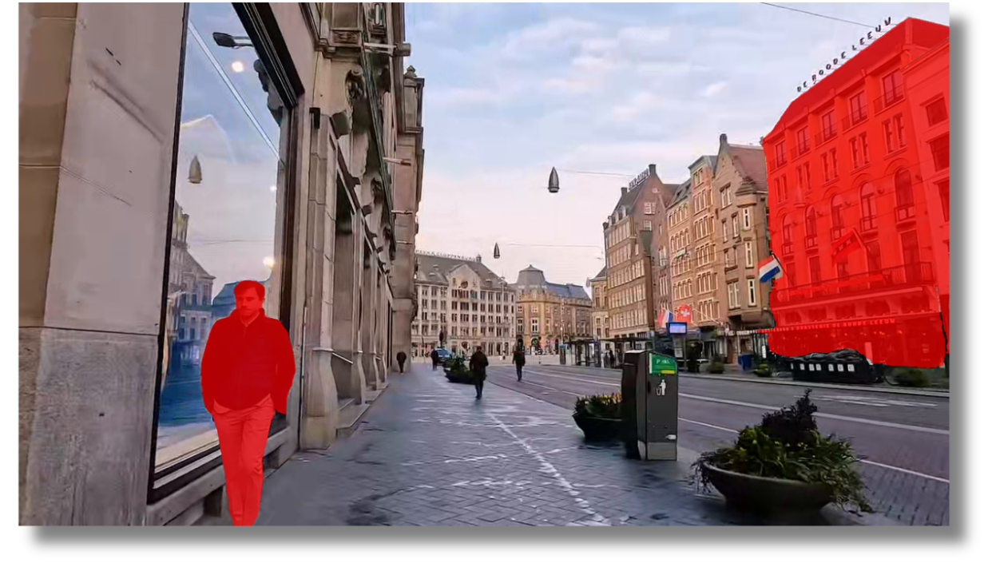
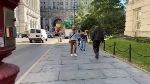
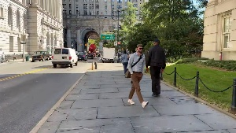
I recall: the man in a light shirt approaches the camera; the man in black walks away.
I imagine: after they pass, they continue in opposite directions.
Their distance will increase.
Qwen3-VL-8B / Pros4D-8B · Accuracy (%)
Overall benchmark accuracy
8B model · accuracy gains in percentage points